By Hans Olav Norheim, hansolav *at * hansolav.net, http://hansolav.net, Last updated 2010-05-22.
Graph algorithms are part of most introductory classes to algorithms, but I have not seen many implementations in SQL or T-SQL. I found it to be an interesting exercise and post the results here for everybody to use.
To test the implementations, you can just copy-paste the code from the web site or you can run graphs_schema.sql to set up the schema in a new database. You can use graphs_test.sql to test the algorithms. You'll need SQL Server 2005 or later for all the code to work. If you have any problems or comments or think I should add another algorithm, feel free to drop me an email.
Contents:
Graphs
Traversal and Search
Breadth-First
Shortest Path
Dijkstra's Algorithm
Topological Sorting
Minimum Spanning Trees
Prim's Algorithm
Kruskal's Algorithm
I plan to add depth first search, maximum flow and more shortest path algorithms later.
A graph is a set of objects, called nodes or vertices, where some pairs of the nodes are connected by links, called edges. Each node can have a name, for instance a city name if the nodes represent cities. Each edge goes from a node to another node, and can have an edge weight if applicable to what the graph is representing. In the city example, the edges could be roads between the cities and the edge weight the length of the road. The figure below shows an example for major US cities, with an approximate driving distance between them. For this example, we pretend that the lines are the only roads that exist.
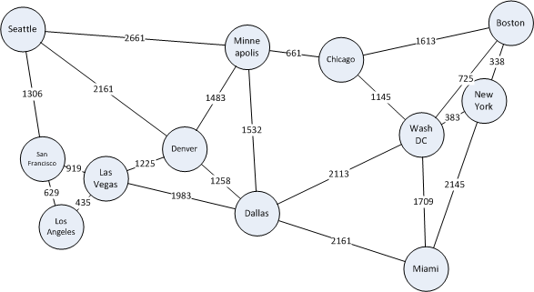 |
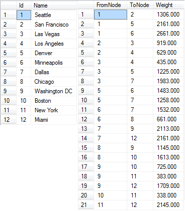 |
| Example graph and how it looks in our data model. Note: I have only included one-way edges for brevity. | |
The way we usually represent graphs in relational databases is shown on the figure below. We have a Node table which contains the nodes with Id and Name and an Edge table which lists the connections, the edges, between the nodes. It references the node table twice for each row - FromNode and ToNode. In general, an edge from node a to node b does not imply an edge from b to a (it could be a one-way road, for example). A two-way edge is therefore modelled as two one-way edges in opposite directions. Although, if your particular application will always have two-way edges, you can have a to b imply b to a and use only one row to describe both directions of the edge to save space. However, the algorithms given below would have to be slightly modified to handle this.
The node Id is the primary key of the node table and the clustered index of this table. FromNode, ToNode is the primary key of the Edge table as we assume we can only have one edge going in the same direction between two nodes, and it is also the clustered index of this table. Weight can be null, as the graph could not be a weighted graph (ie. the edges just represents connections without length, weight or anything). Now, after understanding the model, go back and compare the map to the table contents above.
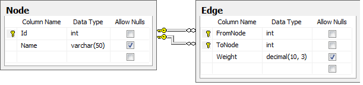
CREATE TABLE dbo.Node
(
Id int NOT NULL PRIMARY KEY,
Name varchar(50) NULL
)
CREATE TABLE dbo.Edge
(
FromNode int NOT NULL REFERENCES dbo.Node (Id),
ToNode int NOT NULL REFERENCES dbo.Node (Id),
[Weight] decimal (10, 3) NULL,
PRIMARY KEY CLUSTERED (FromNode ASC, ToNode ASC)
)
Before we continue on to the algorithms, we need to get some terms straight:
We now continue on to various algorithms we can run on a graph structure like this, and start out with basic search and traversal algorithms.
One of the basic operations that can be done on a graph is to traverse it, and possibly in the process search for a specific node. We can use this to start the search in a specific node a and determine if a different node b is reachable from a and how many hops there are between them. There are mostly two ways of traversing a graph - depth-first were we explore as far as we get in one direction before we look to other neighboring nodes, or breadth-first where we explore all near nodes before we look further away. We will look at breadth-first.
Breadth-first search (BFS) is a graph search algorithm that begins in s specified node and explores the neighboring nodes. Then for each of thos nearest nodes, it explorer their unexplored neighbors, continuing in this fassion until the whole graph has been traversed or until the node sought after is found. Implementations of BFS in procedural code usually uses a queue to keep track of which nodes to visit next. Since SQL is a set-based language, we instead use a table of discovered nodes and successively joins this table to the node table to discover more nodes. We stop when there are no more nodes to discover or we found the node we sought.
The following is an implementation of breadth-first search in T-SQL, taking which node to start in as the first parameter. The second parameter is which node to search for, and is optional. The search will stop when it is found. If NULL is specified, it will traverse the whole graph. Look below the code for a sample run on the US cities example.
-- Runs breadth-first search from a specific node.
-- @StartNode: If of node to start the search at.
-- @EndNode: Stop the search when node with this id is found. Specify NULL
-- to traverse the whole graph.
CREATE PROCEDURE dbo.usp_Breadth_First (@StartNode int, @EndNode int = NULL)
AS
BEGIN
-- Automatically rollback the transaction if something goes wrong.
SET XACT_ABORT ON
BEGIN TRAN
-- Increase performance and do not intefere with the results.
SET NOCOUNT ON;
-- Create a temporary table for storing the discovered nodes as the algorithm runs
CREATE TABLE #Discovered
(
Id int NOT NULL PRIMARY KEY, -- The Node Id
Predecessor int NULL, -- The node we came from to get to this node.
OrderDiscovered int -- The order in which the nodes were discovered.
)
-- Initially, only the start node is discovered.
INSERT INTO #Discovered (Id, Predecessor, OrderDiscovered)
VALUES (@StartNode, NULL, 0)
-- Add all nodes that we can get to from the current set of nodes,
-- that are not already discovered. Run until no more nodes are discovered.
WHILE @@ROWCOUNT > 0
BEGIN
-- If we have found the node we were looking for, abort now.
IF @EndNode IS NOT NULL
IF EXISTS (SELECT TOP 1 1 FROM #Discovered WHERE Id = @EndNode)
BREAK
-- We need to group by ToNode and select one FromNode since multiple
-- edges could lead us to new same node, and we only want to insert it once.
INSERT INTO #Discovered (Id, Predecessor, OrderDiscovered)
SELECT e.ToNode, MIN(e.FromNode), MIN(d.OrderDiscovered) + 1
FROM #Discovered d JOIN dbo.Edge e ON d.Id = e.FromNode
WHERE e.ToNode NOT IN (SELECT Id From #Discovered)
GROUP BY e.ToNode
END;
-- Select the results. We use a recursive common table expression to
-- get the full path from the start node to the current node.
WITH BacktraceCTE(Id, Name, OrderDiscovered, Path, NamePath)
AS
(
-- Anchor/base member of the recursion, this selects the start node.
SELECT n.Id, n.Name, d.OrderDiscovered, CAST(n.Id AS varchar(MAX)),
CAST(n.Name AS varchar(MAX))
FROM #Discovered d JOIN dbo.Node n ON d.Id = n.Id
WHERE d.Id = @StartNode
UNION ALL
-- Recursive member, select all the nodes which have the previous
-- one as their predecessor. Concat the paths together.
SELECT n.Id, n.Name, d.OrderDiscovered,
CAST(cte.Path + ',' + CAST(n.Id as varchar(10)) as varchar(MAX)),
cte.NamePath + ',' + n.Name
FROM #Discovered d JOIN BacktraceCTE cte ON d.Predecessor = cte.Id
JOIN dbo.Node n ON d.Id = n.Id
)
SELECT Id, Name, OrderDiscovered, Path, NamePath FROM BacktraceCTE
WHERE Id = @EndNode OR @EndNode IS NULL -- This kind of where clause can potentially produce
ORDER BY OrderDiscovered -- a bad execution plan, but I use it for simplicity here.
DROP TABLE #Discovered
COMMIT TRAN
RETURN 0
END
Now, let's use the algorithm on the sample data of US cities. Say that we currently are in Seattle, so we want to figure out which cities are reachable from Seattle (in this case all are) and how many "hops" away they are (not how far away, that's the next algorithm). We call usp_Breadth_First with @StartNode = 1 for Seattle, and get the result set seen below. OrderDiscovered corresponds to the order of discovery of the nodes, which is the same as the number of hops away. We can see that there are 0 hops to Seattle (we are already there). If we want to go to Dallas, we should go via Denver, with 2 hops. Note that breadth-first does not care about distance, so the route from Seattle to New York is not the optimal one in terms of distance. The figure on the left shows the paths to the various cities in red.
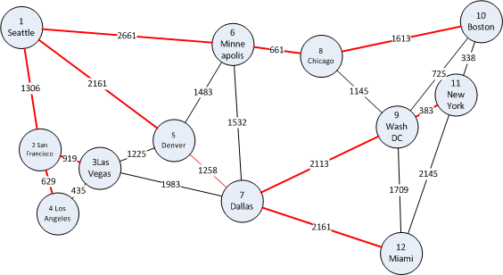 |
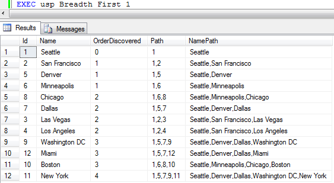 |
| Results from running breadth-first traversal on our example data with Seattle as start node. | |
The shortest path problem consists of finding the shortest path or paths in a weighted graph (the edges have weights, lengths, costs, whatever you want to call it). The shortest path from one node to another is the path where the sum of the egde weights is the smallest possible. An instance of this problem could be to find the shortest path from one city to another if the nodes were to represent cities and the edges roads.
There are many known algoritms for solving the shortest path problem. Some of them solves the shortest paths between all pairs, while others solves the shortest paths from one node to all the others. One such algorithm is the well-known Dijkstra's algorithm. In SQL Server, it can also be solved using recursive common table expressions, but I found the implementation below to perform significantly better in complex and dense (significantly more edges than nodes) graphs.
Dijkstra's algorithm (not Djikstra's) solves the shortest path from one node to all the other nodes in a weighted graph with no negative weight edges. It is probably the most popular implementation for solving this problem. If your graph has negative edge weights, you'll have to use some other algorithms, for instance Bellman-Ford. I'll try to give an implementation of it here later.
Dijkstra's algorithm works much like a breadth-first search that takes the edge weights into account, starting at one node and traversing through the graph. I use a temporary table to keep track of which nodes we're done with and the current estimated distance to the different nodes. The algorithm iterates until no more nodes can be reached. In each iteration, the "closest" nodes as of now is selected and marked as done.
When the algorithm is done, the result is a node table with distances and predecessors. The predecessor of a node is the node we went through right before coming to the current node. This means that we have a backwards linked chain of nodes we can follow to get the complete path. This is what the recursice common table expression (CTE) in the end does. It recurses through this path and builds a comma separated list of the nodes we went through to get to some node with the specified distance.
Below is a full implementation of Dijkstra's algorithm in Below is a full implementation of Dijkstra's algorithm in T-SQL. I've had it compute shortest paths to all nodes in a fairly dense graph with 1,000 nodes and 200,000 edges and it completed quite quickly (around 1 second with data cached).
-- Runs Dijkstras algorithm from the specified node.
-- @StartNode: Id of node to start from.
-- @EndNode: Stop the search when the shortest path to this node is found.
-- Specify NULL find shortest path to all nodes.
CREATE PROCEDURE dbo.usp_Dijkstra (@StartNode int, @EndNode int = NULL)
AS
BEGIN
-- Automatically rollback the transaction if something goes wrong.
SET XACT_ABORT ON
BEGIN TRAN
-- Increase performance and do not intefere with the results.
SET NOCOUNT ON;
-- Create a temporary table for storing the estimates as the algorithm runs
CREATE TABLE #Nodes
(
Id int NOT NULL PRIMARY KEY, -- The Node Id
Estimate decimal(10,3) NOT NULL, -- What is the distance to this node, so far?
Predecessor int NULL, -- The node we came from to get to this node with this distance.
Done bit NOT NULL -- Are we done with this node yet (is the estimate the final distance)?
)
-- Fill the temporary table with initial data
INSERT INTO #Nodes (Id, Estimate, Predecessor, Done)
SELECT Id, 9999999.999, NULL, 0 FROM dbo.Node
-- Set the estimate for the node we start in to be 0.
UPDATE #Nodes SET Estimate = 0 WHERE Id = @StartNode
IF @@rowcount <> 1
BEGIN
DROP TABLE #Nodes
RAISERROR ('Could not set start node', 11, 1)
ROLLBACK TRAN
RETURN 1
END
DECLARE @FromNode int, @CurrentEstimate int
-- Run the algorithm until we decide that we are finished
WHILE 1 = 1
BEGIN
-- Reset the variable, so we can detect getting no records in the next step.
SELECT @FromNode = NULL
-- Select the Id and current estimate for a node not done, with the lowest estimate.
SELECT TOP 1 @FromNode = Id, @CurrentEstimate = Estimate
FROM #Nodes WHERE Done = 0 AND Estimate < 9999999.999
ORDER BY Estimate
-- Stop if we have no more unvisited, reachable nodes.
IF @FromNode IS NULL OR @FromNode = @EndNode BREAK
-- We are now done with this node.
UPDATE #Nodes SET Done = 1 WHERE Id = @FromNode
-- Update the estimates to all neighbour node of this one (all the nodes
-- there are edges to from this node). Only update the estimate if the new
-- proposal (to go via the current node) is better (lower).
UPDATE #Nodes
SET Estimate = @CurrentEstimate + e.Weight, Predecessor = @FromNode
FROM #Nodes n INNER JOIN dbo.Edge e ON n.Id = e.ToNode
WHERE Done = 0 AND e.FromNode = @FromNode AND (@CurrentEstimate + e.Weight) < n.Estimate
END;
-- Select the results. We use a recursive common table expression to
-- get the full path from the start node to the current node.
WITH BacktraceCTE(Id, Name, Distance, Path, NamePath)
AS
(
-- Anchor/base member of the recursion, this selects the start node.
SELECT n.Id, node.Name, n.Estimate, CAST(n.Id AS varchar(8000)),
CAST(node.Name AS varchar(8000))
FROM #Nodes n JOIN dbo.Node node ON n.Id = node.Id
WHERE n.Id = @StartNode
UNION ALL
-- Recursive member, select all the nodes which have the previous
-- one as their predecessor. Concat the paths together.
SELECT n.Id, node.Name, n.Estimate,
CAST(cte.Path + ',' + CAST(n.Id as varchar(10)) as varchar(8000)),
CAST(cte.NamePath + ',' + node.Name AS varchar(8000))
FROM #Nodes n JOIN BacktraceCTE cte ON n.Predecessor = cte.Id
JOIN dbo.Node node ON n.Id = node.Id
)
SELECT Id, Name, Distance, Path, NamePath FROM BacktraceCTE
WHERE Id = @EndNode OR @EndNode IS NULL -- This kind of where clause can potentially produce
ORDER BY Id -- a bad execution plan, but I use it for simplicity here.
DROP TABLE #Nodes
COMMIT TRAN
RETURN 0
END
Now, let's use the algorithm on the sample data of US cities. Say that we currently are in Seattle, so we want to figure out the distances to the other citites and what route we should take to get there. We therefore call usp_Dijkstra with @StartNode = 1 for Seattle, and get the result set seen below. We can see that to go to Seattle the distance is 0 (we are already there). If we want to go to Dallas, we should go via Denver, and the distance will be 3419. This is shorter than, say, to go via Minneapolis.
The figure on the left shows the shortest paths to the various cities in red.
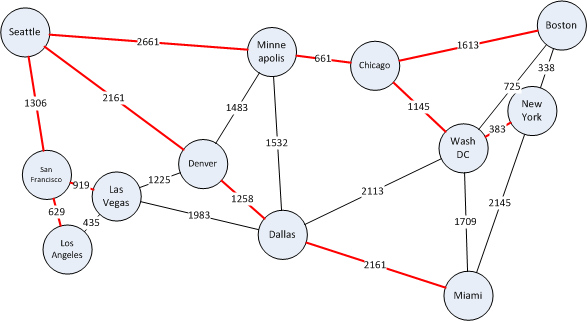 |
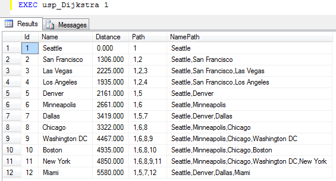 |
| Results from running Dijkstra's algorithm on our example data with Seattle as start node. | |
If we have a directed acyclic graph (DAG) as described in the first section of this page, we can perform a topological sorting to get a topological ordering of the nodes in the graph. A topological ordering is an ordering of the DAG's nodes, such that each node comes before all nodes to which it has outbound edges. Such an ordering can be used to schedule tasks under precedence constraints. Suppose we have a set of tasks to perform, each represented by nodes in a graph, but some tasks need to be performed before other tasks. We model such constraints using directed edges. If a needs to be performed before b, we add an edge a → b.
Below is an example of getting dressed in the morning. Each node represents a task to get a certain piece of clothing on and the edges between them dictate in which order it must happen. For example, undershorts needs to come on before pants and shoes, pants before shoes and belt and so on, but socks can come on either before or after undershorts and pants, but before shoes. The watch does not have any constraints and can come on at any time.
Producing a topological ordering in essence boils down to ordering the nodes in such a way that all the edges point in one direction. Such an ordering for our example is show below, and this is one of the multiple valid topological orderings for this DAG. It describes one way of getting dressed without running into a problem.
To be able to produce a topological ordering, the graph cannot have any cycles. For example, if there is a cycle with a and b in it, it would mean that a should come before b and b before a, which is not possible. In this case the algorithm terminates with an error. Edge weights does not mean anything in this context, so they are NULL.
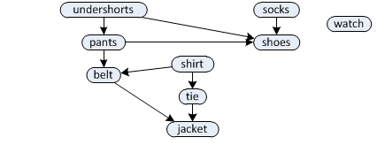 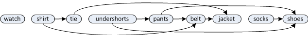 |
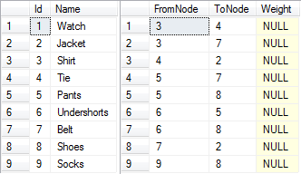 |
The following code implements topological sorting in T-SQL.
-- Determines a topological ordering or reports that the graph is not a DAG. CREATE PROCEDURE dbo.usp_TopologicalSort AS BEGIN -- Automatically rollback the transaction if something goes wrong. SET XACT_ABORT ON BEGIN TRAN -- Increase performance and do not intefere with the results. SET NOCOUNT ON; -- Create a temporary table for building the topological ordering CREATE TABLE #Order ( NodeId int PRIMARY KEY, -- The Node Id Ordinal int NULL -- Defines the topological ordering. NULL for nodes that are ) -- not yet processed. Will be set as nodes are processed in topological order. -- Create a temporary copy of the edges in the graph that we can work on. CREATE TABLE #TempEdges ( FromNode int, -- From Node Id ToNode int, -- To Node Id PRIMARY KEY (FromNode, ToNode) ) -- Grab a copy of all the edges in the graph, as we will -- be deleting edges as the algorithm runs. INSERT INTO #TempEdges (FromNode, ToNode) SELECT e.FromNode, e.ToNode FROM dbo.Edge e -- Start by inserting all the nodes that have no incoming edges, is it -- is guaranteed that no other nodes should come before them in the ordering. -- Insert with NULL for Ordinal, as we will set this when we process the node. INSERT INTO #Order (NodeId, Ordinal) SELECT n.Id, NULL FROM dbo.Node n WHERE NOT EXISTS ( SELECT TOP 1 1 FROM dbo.Edge e WHERE e.ToNode = n.Id) DECLARE @CurrentNode int, -- The current node being processed. @Counter int = 0 -- Counter to assign values to the Ordinal column. -- Loop until we are done. WHILE 1 = 1 BEGIN -- Reset the variable, so we can detect getting no records in the next step. SET @CurrentNode = NULL -- Select the id of any node with Ordinal IS NULL that is currently in our -- Order table, as all nodes with Ordinal IS NULL in this table has either -- no incoming edges or any nodes with edges to it have already been processed. SELECT TOP 1 @CurrentNode = NodeId FROM #Order WHERE Ordinal IS NULL -- If there are no more such nodes, we are done IF @CurrentNode IS NULL BREAK -- We are processing this node, so set the Ordinal column of this node to the -- counter value and increase the counter. UPDATE #Order SET Ordinal = @Counter, @Counter = @Counter + 1 WHERE NodeId = @CurrentNode -- This is the complex part. Select all nodes that has exactly ONE incoming -- edge - the edge from @CurrentNode. Those nodes can follow @CurrentNode -- in the topological ordering because the must not come after any other nodes, -- or those nodes have already been processed and inserted earlier in the -- ordering and had their outgoing edges removed in the next step. INSERT #Order (NodeId, Ordinal) SELECT Id, NULL FROM dbo.Node n JOIN #TempEdges e1 ON n.Id = e1.ToNode -- Join on edge destination WHERE e1.FromNode = @CurrentNode AND -- Edge starts in @CurrentNode NOT EXISTS ( -- Make sure there are no edges to this node SELECT TOP 1 1 FROM #TempEdges e2 -- other then the one from @CurrentNode. WHERE e2.ToNode = n.Id AND e2.FromNode <> @CurrentNode) -- Last step. We are done with @CurrentNode, so remove all outgoing edges from it. -- This will "free up" any nodes it has edges into to be inserted into the topological ordering. DELETE FROM #TempEdges WHERE FromNode = @CurrentNode END -- If there are edges left in our graph after the algorithm is done, it -- means that it could not reach all nodes to eliminate all edges, which -- means that the graph must have cycles and no topological ordering can be produced. IF EXISTS (SELECT TOP 1 1 FROM #TempEdges) BEGIN SELECT 'The graph contains cycles and no topological ordering can be produced. This is the set of edges I could not remove:' SELECT FromNode, ToNode FROM #TempEdges END ELSE -- Select the nodes ordered by the topological ordering we produced. SELECT n.Id, n.Name FROM dbo.Node n JOIN #Order o ON n.Id = o.NodeId ORDER BY o.Ordinal -- Clean up, commit and return. DROP TABLE #TempEdges DROP TABLE #Order COMMIT TRAN RETURN 0 END
When running it on the example data above, we get the following output, which is also illustrated in the figure above.
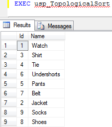 |
The next topic we move on to is minimum spanning trees. Suppose you have a graph that is connected (ie. all nodes can be reached from any node) and undirected (edges have no direction - or every edge is a two-way edge with equal weights). A spanning tree of such a graph is a sub-graph which is a tree (ie. has no cycles) and connects all the nodes, using a subset of the original edges. The figure below shows an example where the edges making up the spanning tree is shown in bold. A graph can have many spanning trees. A minimum spanning tree is a spanning tree with total weight (sum of the edge weights in it) equal to or less than every other spanning tree.
In the context of our example data of major cities and roads in the US, a spanning tree would be a set of edges that connect all the cities together, without loops. A minimum spanning tree would be the set of edges that does this with the fewest road-kilometers. As an example of a problem that can be solved with minimum spanning trees, suppose all the roads in our graph example from the top of this page were dirt roads. The US government now wants to pave them, but laying asphalt is expensive and has a high cost per meter laid down so they will not pave them all. They decide that they will spend as little money as possible, but you should still be able to drive between any two cities on all-paved roads. Which roads should they pave?
The answer is the roads that make up the minimum spanning tree and is shown in red on the figure below. Its total weight (length) is 9314, so in this particular graph it is not possible to pave less road than 9314 kilometers and still have all cities connected by paved roads.
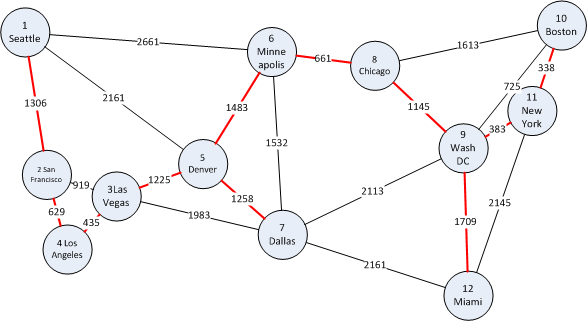
Next, we look at two algorithms for finding the mimum spanning tree of a graph, namely Prim's algorithm and Kruskal's algorithm. They both find the minimum spanning tree, but if there are multiple they might not find the same one. If you just want an algorithm that works, you only need one of them, but I included both of them for the interested reader. Of the two T-SQL implementations, Prim mostly runs faster, so choose this if you are to select one.
Prims's algorithm is not too hard to understand and resembles Dijkstra a little bit. First it creates a temporary table containing all the nodes that we can use to mark nodes as done and then it selects a random node as the start node. It does not matter which is chosen, as all nodes must be in the spanning tree anyways.
Then it proceeds by selecting the "closest" node (which is the start node at first), marks it as visited and updates the distance to all its neighbors. In the next iteration, the "closest" nodes is again chosen. Here, the "closest" means the node and edge which is cheapest to add to the spanning tree at this point. It continues to choose the cheapest node until all the nodes have been visited, at which point the minimum spanning tree is known.
Below is the full implementation of Prim's algorithm in T-SQL. It has appromixmately the same run time as Dijkstra - around 1 second on a graph with 1,000 nodes and 200,000 edges.
-- Computes a minimum spanning tree using Prim's algorithm.
CREATE PROCEDURE dbo.usp_Prim
AS
BEGIN
-- Automatically rollback the transaction if something goes wrong.
SET XACT_ABORT ON
BEGIN TRAN
-- Increase performance and don't intefere with the results.
SET NOCOUNT ON;
-- Create a temporary table for storing the estimates as the algorithm runs
CREATE TABLE #Nodes
(
Id int NOT NULL PRIMARY KEY, -- The Node Id
Estimate decimal(10,3) NOT NULL, -- What is the distance to this node, so far?
Predecessor int NULL, -- The node we came from to get to this node with this distance.
Done bit NOT NULL -- Are we done with this node yet (is the estimate the final distance)?
)
-- Fill the temporary table with initial data
INSERT INTO #Nodes (Id, Estimate, Predecessor, Done)
SELECT Id, 9999999.999, NULL, 0 FROM dbo.Node
-- Set the estimate for start node to be 0.
UPDATE TOP (1) #Nodes SET Estimate = 0
DECLARE @FromNode int
-- Run the algorithm until we decide that we are finished
WHILE 1 = 1
BEGIN
-- Reset the variable, so we can detect getting no records in the next step.
SELECT @FromNode = NULL
-- Select the Id for a node not done, with the lowest estimate.
SELECT TOP 1 @FromNode = Id
FROM #Nodes WHERE Done = 0 AND Estimate < 9999999.999
ORDER BY Estimate
-- Stop if we have no more unvisited, reachable nodes.
IF @FromNode IS NULL BREAK
-- We are now done with this node.
UPDATE #Nodes SET Done = 1 WHERE Id = @FromNode
-- Update the estimates to all neighbour nodes of this one (all the nodes
-- there are edges to from this node). Only update the estimate if the new
-- proposal (to go via the current node) is better (lower).
UPDATE #Nodes
SET Estimate = e.Weight, Predecessor = @FromNode
FROM #Nodes n INNER JOIN dbo.Edge e ON n.Id = e.ToNode
WHERE Done = 0 AND e.FromNode = @FromNode AND e.Weight < n.Estimate
END
-- Verify that we have enough edges to connect the whole graph.
IF EXISTS (SELECT TOP 1 1 FROM #Nodes WHERE Done = 0)
BEGIN
DROP TABLE #Nodes
RAISERROR('Error: The graph is not connected.', 1, 1)
ROLLBACK TRAN
RETURN 1
END
-- Select the results. WHERE Predecessor IS NOT NULL filters away
-- the one row with represents the starting node.
SELECT n.Predecessor AS FromNode, n.Id AS ToNode,
node1.Name AS FromName, node2.Name AS ToName
FROM #Nodes n
JOIN dbo.Node node1 ON n.Predecessor = node1.Id
JOIN dbo.Node node2 ON n.Id = node2.id
WHERE n.Predecessor IS NOT NULL
ORDER BY n.Predecessor, n.id
DROP TABLE #Nodes
COMMIT TRAN
RETURN 0
END
The output from Prim's algorithm in the set of edges making up the minimum spanning tree, shown on the right below. If we highligt these edges in red on the map, we get the same map as was shown above.
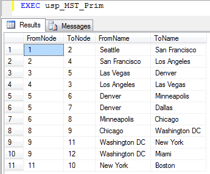 |
|
| Results from running Prim's algorithm on our example data. | |
Next up for minimum spanning trees is Kruskal's algorithm. It solves the problem by using a different approach. To start with, it initially creates one cluster or sub-tree for each node in the graph. Then, it picks the shortest edge in the graph and sees if it connects to seperate trees. If it does, it merges the trees. If it introduces a loop within one tree, it discards the edge. This is repeated until all the nodes form one big tree, which will be the minimal spanning tree.
Below is the full implementation in T-SQL. It runs slower than Prim's algorithm, but I included it for completeness.
-- Computes a minimum spanning tree using Kruskal's algorithm.
CREATE PROCEDURE dbo.usp_Kruskal
AS
BEGIN
-- Automatically rollback the transaction if something goes wrong.
SET XACT_ABORT ON
BEGIN TRAN
-- Increase performance and do not intefere with the results.
SET NOCOUNT ON
CREATE TABLE #MSTNodes(Id int PRIMARY KEY, ClusterNum int) -- Temp table for clusters
CREATE TABLE #MST (FromNode int, ToNode int PRIMARY KEY (FromNode, ToNode)) -- Result accumulator
DECLARE @FromNode int, @ToNode int, -- Start and end point for the current edge
@EdgeCount int = 0, @NodeCount int, -- Edge count along the way, total node count
@FromCluster int, @ToCluster int -- Start and end cluster for the current edge
-- First, create one cluster for each of the nodes
INSERT #MSTNodes (Id, ClusterNum)
SELECT Id, Id FROM dbo.Node
-- Get the total node count
SELECT @NodeCount = COUNT(*) FROM #MSTNodes
-- Get a cursor iterating through all the edges sorted increasing on weight.
DECLARE EdgeCursor CURSOR READ_ONLY FOR
SELECT FromNode, ToNode
FROM dbo.Edge
WHERE FromNode < ToNode -- Don't get self loops, they are not part of the tree.
ORDER BY Weight
OPEN EdgeCursor
-- Get the first edge
FETCH NEXT FROM EdgeCursor INTO @FromNode, @ToNode
-- Loop until we have no more edges or we have Nodes - 1 edges (this is enough).
WHILE @@FETCH_STATUS = 0 AND @EdgeCount < @NodeCount - 1
BEGIN
-- Get the clusters for this edge
SELECT @FromCluster = ClusterNum FROM #MSTNodes WHERE Id = @FromNode
SELECT @ToCluster = ClusterNum FROM #MSTNodes WHERE Id = @ToNode
-- If the edge ends in different clusters, the edge is safe, so add it to the MST.
IF (@FromCluster <> @ToCluster)
BEGIN
-- Merge the two clusters by updating the cluster number of the "to cluster" to the
-- cluster number of the "from cluster".
UPDATE #MSTNodes
SET ClusterNum = @FromCluster
WHERE ClusterNum = @ToCluster
-- Insert the edge into the result and increment the edge count
INSERT #MST VALUES (@FromNode, @ToNode)
SET @EdgeCount = @EdgeCount + 1
END
-- Get the next edge
FETCH NEXT FROM EdgeCursor INTO @FromNode, @ToNode
END
-- Close and deallocate the cursor
CLOSE EdgeCursor
DEALLOCATE EdgeCursor
-- Verify that we have enough edges to connect the whole graph.
IF (SELECT COUNT(*) FROM #MST) < @NodeCount - 1
BEGIN
DROP TABLE #MSTNodes
DROP TABLE #MST
RAISERROR('Error: The graph is not connected.', 1, 1)
ROLLBACK TRAN
RETURN 1
END
-- Select the results.
SELECT mst.FromNode, mst.ToNode,
node1.Name AS FromName, node2.Name AS ToName
FROM #MST mst
JOIN dbo.Node node1 ON mst.FromNode = node1.Id
JOIN dbo.Node node2 ON mst.ToNode = node2.id
ORDER BY mst.FromNode, mst.ToNode
DROP TABLE #MSTNodes
DROP TABLE #MST
COMMIT TRAN
RETURN 0
END
As for Prim, the output from Kruskal's algorithm is also the set of edges making up the minimum spanning tree. Since our map has only one minimum spanning tree, the same edges as we got from Prim is output, the only difference being the order of the edges. If there had been multiple minimum spanning trees with the same weight, we could have gotten a different one.
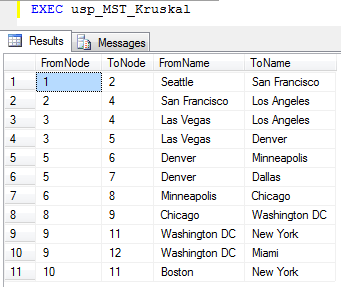 |
|
| Results from running Kruskal's algorithm on our example data. | |
2010-05-22 - Initial version published